볕 진행 보고
총괄 → 박사님 · 2026-11-03 (01시 처음 적음 · 05:24 · 07:4x 고침 · 11-02 밤 21시 ~ 11-03 07시) · 값(밸런스)은 안 바꿈(D95) · 어제 보고 master-progress-20261102.html · 큰 줄기 계획 master-roadmap-20261102.html
한눈에
- 07시 · 다섯째 묶음 끝남은 넷을 올렸다(672fa131). 중고 거래 연락이 오면 칩이 [상점]을 말하고 손가락이 [거래하기]를 짚는다. 화분 주문을 기다리는 날은 칩이 «화분이 오는 중 — 2일 뒤»를 말한다. 식물을 크게 보는 화면에서 [다음 날]이 [시야 돌아가기] 줄로 올라가 카드를 안 덮는다. 걸어가는 동안 누른 단추와 방 위에 «🚶 가는 중…»이 뜬다. 회귀 빨강 셋은 또 헤드리스 그림 멈춤이었다. 고치기 전 판을 번갈아 돌려 같은 꼴을 보고, 검사만 굳혔다(782f0660). 아래 «다섯째 묶음 끝» 사진 넷.
- 05시 · 막힘과 엔딩 길 고침비판 여덟째 판이 찾은 막힘(②)과 엔딩으로 들어가는 길(③)을 올렸다. 진로를 안 고른 채 방에 있으면 [다음 날] 자리가 «🏡 진로 고르기 ▸»가 된다(c2211624). 자금이 모인 날은 칩과 손가락이 [할 일] → [내 집 마련하기]를 짚고, 계약하면 시트가 닫혀 엔딩 그림이 가려지지 않는다(b4f983d2). 회귀 빨강 셋은 모두 헤드리스 그림 멈춤 탓으로 갈렸다. 같은 판을 번갈아 돌려 고치기 전 판도 같은 꼴로 빨강이 나는 것을 보고 검사만 고쳤다. 아래 «고친 뒤» 사진 넷.
- 비판 여덟째 판큰 줄기 계획 3단계를 시작했다. 엔딩과 진로를 사람 눈으로 처음 본 판이다. 내 집 계약 → 엔딩 → 진로 셋(가게 40일 · 돌봄 30일 · 육종 30일) → 돌봄 끝맺음 → 진로 바꾸기까지 갔다. 판정은 BLOCK 이고, 막힘 1 · 큰 문제 10 · 작은 문제 15 · 물음 6 이다. 막힘은 진로 화면 [방 둘러보기]를 누르면 옛 원룸에 갇히는 것이다(②). 값이 아니라 core 가 바로 고친다. 이것 하나를 빼면 엔딩과 진로는 끝까지 돈다.
- 좋은 곳엔딩 대사와 그림(«엄마, 아빠. 나 집 생겼어.»), 돌봄의 «자세히 → 자르기 → 나음 → 돌려준다» 손맛, 진로 바꾸기 화면(⑤)을 비판이 좋다고 했다.
- 큰 문제엔딩 그림을 할 일 시트가 덮은 채 시작함(③) · 자금이 모인 날 손가락이 계약 단추를 안 짚음 · 새 집 첫날 자동 자리가 길을 막는 칸을 고름 · 진로 판(주문판 · 맡김판 · 기록장)이 상점 탭 셋째 화면에 묻힘 · 진로 목표와 진척이 안 보임 · 육종은 30일 수입 0 으로 Day 472 에 0원(④). 값이 안 걸린 것은 core 13 · plan 7 줄로 나눴다.
- 다섯째 묶음밤사이 셋을 더 고쳤다. 다시 심기가 아껴 둔 물 줄 체력까지 쓰던 것(ed8c32c5)과, 확인 창 · 손가락이 놓일 자리와 제목을 덮던 것(990b0bda)이다. 심기 말풍선 흐림도 올렸다(1f7f1b8f · 회귀 빨강은 그림 멈춤 탓으로 갈림). 바닥 단추 첫 누름이 안 먹힌다던 것은 다시 일으켜 보니 비판 도구 탓이어서 버렸다.
- 여쭐 것새로 여섯(18~23)이다. 진로 첫 주문 값 · 진로 끝맺음까지의 길이 · 진로 하루 · 초반 벌이 · 기한 넘긴 주문 · 끝맺음 그림이다(맨 아래).
비판 여덟째 판 — 사진으로
판 c19b3233 · 자동 플레이어가 키운 세이브(Day 445 · 원룸 · 5,063,924원)에서 시작했다. 총괄이 사진을 직접 봤다. 누르면 크게 보인다.
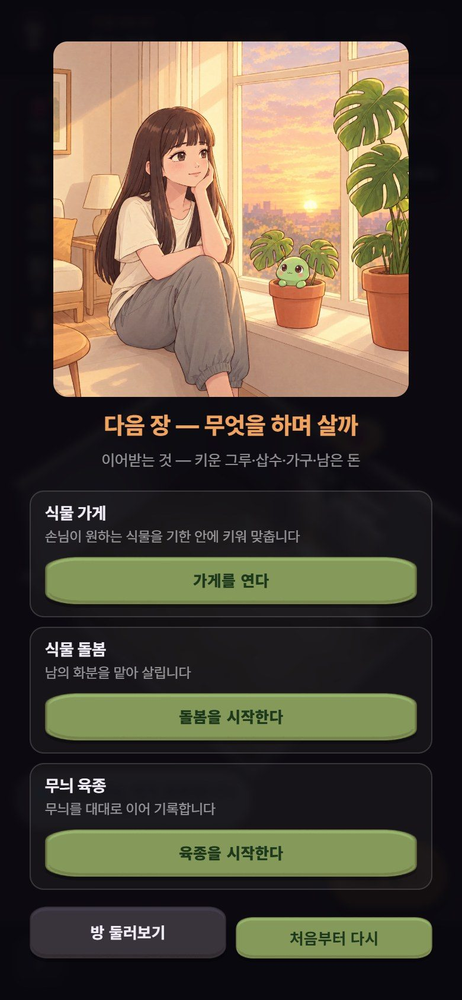
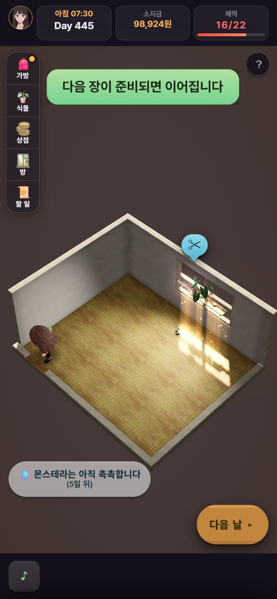
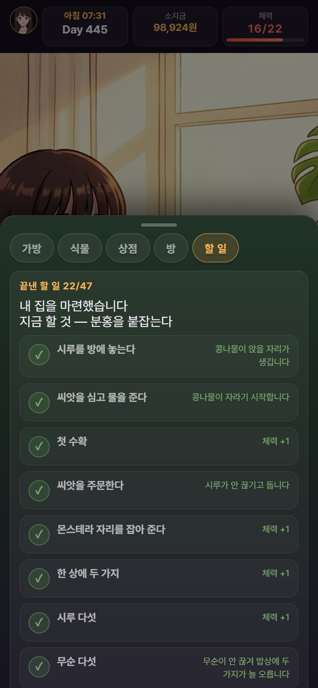
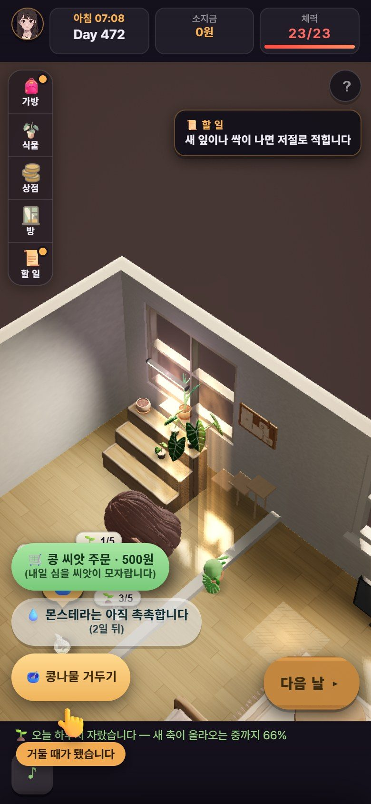
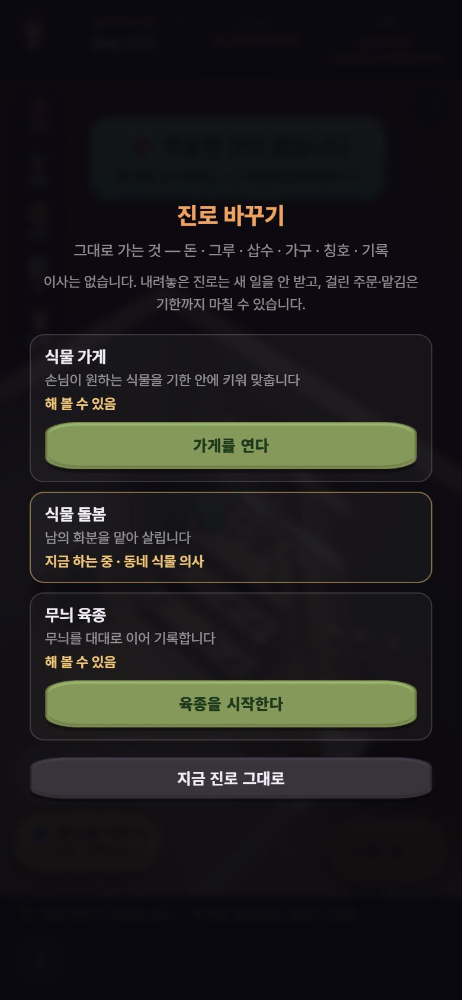
고친 뒤 — 사진으로 (05시)
올린 판 b4f983d2 와 같은 코드로 core 회귀가 찍은 폰 화면(390×844)이다. 같은 세이브(Day 445 · 5,063,924원)에서 시작했다. 총괄이 직접 봤다.
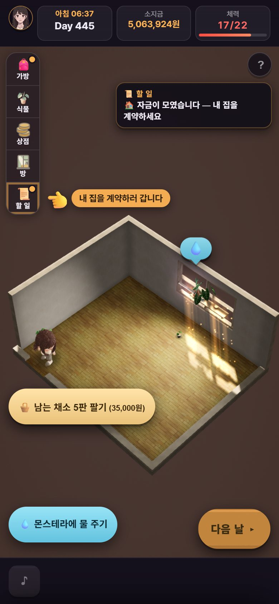
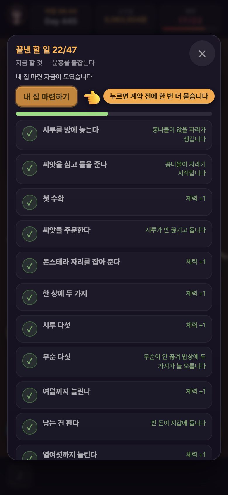
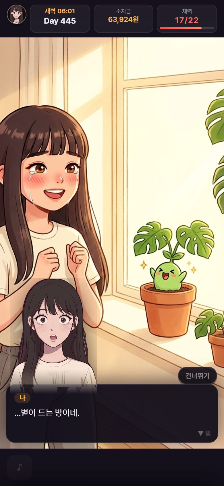
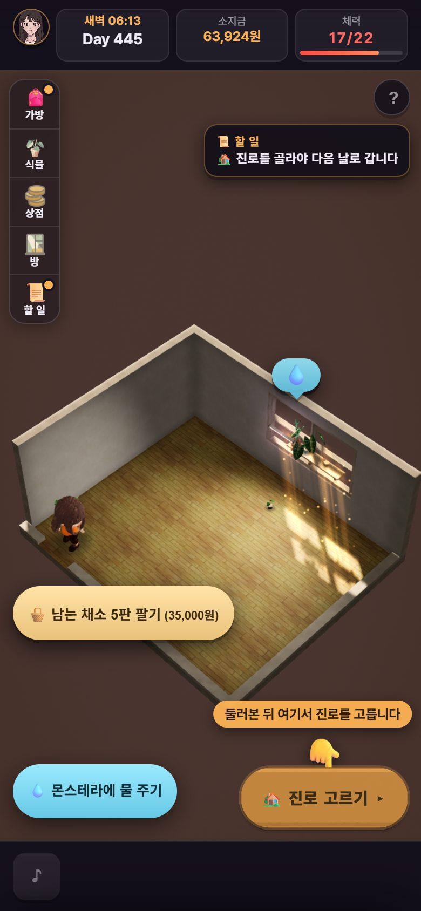
다섯째 묶음 끝 — 사진으로 (07시)
올린 판 672fa131 과 같은 코드(game.html 해시 같음)로 core 회귀가 찍은 폰 화면(390×844)이다. 총괄이 직접 봤다.
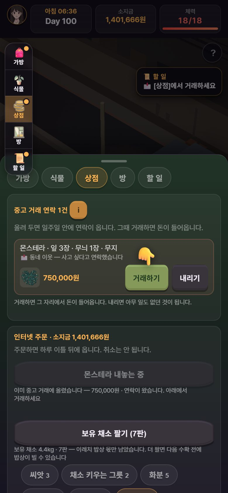
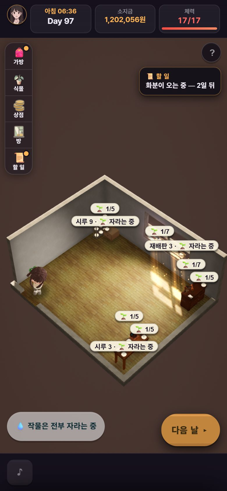
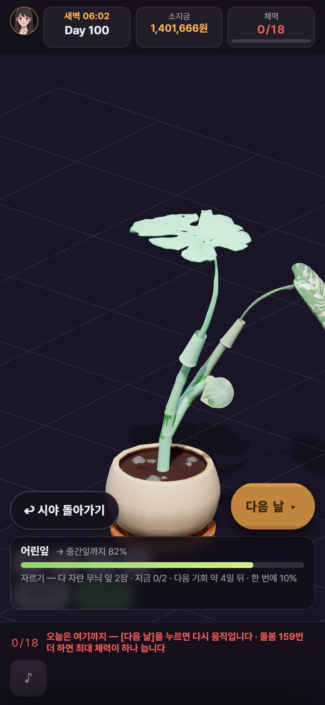
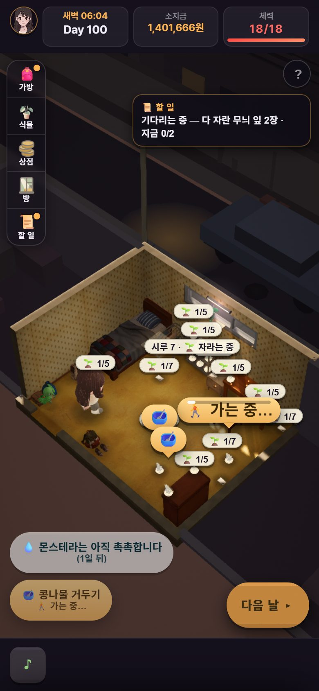
고친 것 · 가른 것 — 목록 (11-02 21시 뒤)
| 무엇 | 어떻게(값 안 바꿈) | 판 |
|---|---|---|
| 다시 심기가 아낀 물 줄 체력까지 씀(7판 #4 보이는 몫) | 남은 체력이 물 줄 몫뿐이면 회색 «(남은 체력은 물 줄 몫 — 💧 먼저)» · 누르면 심지 않고 알림 · 꼬리 수는 이미 물 기다리는 줄까지 셈 | ed8c32c5 |
| 확인 창 · 손가락이 놓일 자리와 제목을 덮음(7판 #6 · #7) | 확인 바가 놓일 자리를 비켜 위 · 아래로 · 손가락도 그 자리를 비킴 · 좁으면 손만 · 등 다는 창 제목 «식물등을»도 다 보임 | 990b0bda |
| 바닥 단추 첫 누름이 안 먹힘(7판 · 6판 #1) | 버림 — 첫 누름은 먹히고 주인공이 걸어가는 5~9초 뒤 체력이 준다. 비판 도구가 3.5초 만에 읽고 또 눌렀다. 다만 걷는 동안 단추가 그대로라 사람도 헷갈릴 수 있어, «가는 중…»을 다는 줄(7C11)을 따로 넣었다 | core 재현 |
| 심기 말풍선이 물 몫을 씀 | 다시 심기가 회색인 동안 거둔 시루 «🌱» 말풍선 · 줄 단추를 흐리게(누르면 그대로 심김 — 낱개는 사람의 고름) · 회귀 빨강은 헤드리스 그림 멈춤 탓(고치기 전 판도 같은 때 빨강) | 1f7f1b8f |
| 막힘 — [방 둘러보기] 뒤 옛 원룸에 갇힘(8판 ②) | 진로를 안 고른 동안 [다음 날] 자리가 «🏡 진로 고르기 ▸» · 누르면 진로 화면 · 할 일 «진로를 골라야 다음 날로 갑니다» | c2211624 |
| 엔딩 그림을 시트가 덮음 · 자금 모인 날 손가락이 딴 데(8판 ③) | 계약하면 열린 창을 닫고 그림부터 · 자금이 모인 날 칩 «자금이 모였습니다 — 내 집을 계약하세요» · 손가락 [할 일] → [내 집 마련하기] · 할 일 창 밑에 깔린 칩은 손가락이 비킬 것에서 뺌(배너 밑 칩은 그대로 비킴) | b4f983d2 |
| 회귀 빨강 둘(손가락이 배너 위 · 확인 창 배너 못 봄) | 검사 탓 — 헤드리스에서 그림이 멈추면 배너가 비키거나 나타나기 전에 잼. 지금 올라간 판과 고친 판을 번갈아 돌려 둘 다 같은 꼴로 갈림. 검사만 고침(다시 잼 · 움직임 끝으로 보냄 · 못 보면 «못 봄» 빨강). 폰에서는 생기지 않는다 | b4f983d2 · 가름 31437a61 |
| 다섯째 묶음 나머지 넷(7판 7C8 ~ 7C11) | 거래 연락 칩 · 손가락 [거래하기](손만) · «화분이 오는 중 — n일 뒤» · 확대 화면에서 [다음 날]을 [시야 돌아가기] 줄로 · 걷는 동안 «🚶 가는 중…». 고치기 전 판에서 새 검사 넷이 먼저 빨강인 것을 봤다. 칩 계산이 둘 늘어 화면이 느려지는지도 쟀다(안 느려짐) | 672fa131 |
| 회귀 빨강 셋(계약 뒤 시트 · 빛 분포 단추 · 상점 손가락) | 검사 탓 — 셋 다 시트가 움직이는 때. 고치기 전 판과 번갈아 돌려 고치기 전 판도 같은 꼴로 빨강(상점 손가락은 네 번 모두 세 너비 가운데 한 너비씩)인 것을 봤다. 검사만 굳힘(움직임 끝으로 보내고 다시 잼 · 몇 번 만에 섰는지 적음 · 끝내 안 서면 빨강). 굳힌 검사는 시트가 안 닫히던 옛 판에서는 여전히 빨강이다 | 782f0660 |
| 총괄 끝 걸음 목록 | 다섯째 · 여섯째 묶음 검사 23 · 사진 8 을 더함 — 묶음이 다 들어간 뒤 한 번에 걷는다 | c3783ac7 |
| 비판 여덟째 판 가름 | core 8C1 ~ 8C13 · plan 8P1 ~ 8P7 · 박사님 물음 18 ~ 23 · 도구 탓 일곱 버림 | 가름 문서 |
총괄이 정한 것(D95 안 · 값 아님)
- 3단계를 박사님 답 전에 시작: 큰 줄기 계획대로, 2단계 값 답을 기다리는 동안 엔딩 · 진로를 사람 눈으로 먼저 봤다. 덕분에 막힘을 박사님이 만나시기 전에 찾았다.
- 막힘이 먼저: core 는 지금 하던 고침 하나를 마치면 [방 둘러보기] 갇힘부터 고친다. 그다음 엔딩으로 들어가는 길(시트 · 손가락), 남은 다섯째 묶음, 나머지 순이다.
- 진로 카드에 목표와 «끝맺음 뒤 바꿀 수 있음»: 이미 있는 규칙(D75)을 화면에 보이는 것이라 넣는다. 끝맺음까지 날수(몇 년)는 사람마다 달라 쓰지 않는다. 그 길이 자체는 여쭌다(19번).
- 기한 넘긴 주문은 알림만: 말없이 사라지던 것에 아침 알림 한 줄을 단다. 손님 반응 · 벌은 값이라 여쭌다(22번).
- 심기 말풍선은 흐리게만: 한 화면이 두 말을 하지 않게 흐리지만, 사람이 골라 누르는 것은 막지 않는다.
- 검사 흔들림은 검사만 고친다: 배너가 손가락을 비키는 것은 화면을 그릴 때마다 도는 고리에서 일어난다. 폰에서는 늘 돌아 문제가 없다. 게임 쪽에서 바로 비키게 하는 안은 후보로만 두고, 같은 꼴 흔들림이 또 나오면 그때 넣는다.
- 상점 손가락이 늦게 뜨는가: 네 번 모두 «세 너비 가운데 꼭 하나»만 꺼진 꼴이 고르게 보여, 게임이 처음 상점을 열 때 손가락을 늦게 띄우는지 의심했다. 굳힌 검사로 세 번(열여덟 칸) 재니 다 첫 잼에 섰다. 헤드리스에서 시트 움직임이 멈춘 탓으로 보고 따로 고치지 않는다. 박사님 폰 판에서 다시 본다.
- 엔딩 그림이 나타날 때 방 선이 비침: 사진으로 2.5초 뒤에는 안 보이는 것을 봤다. 방에서 그림으로 겹쳐 바뀌는 연출로 보고 고치지 않는다.
다음
- core:
심기 말풍선 흐림→[방 둘러보기] 갇힘(8C1)→엔딩으로 들어가는 길(8C2 · 8C3)→남은 다섯째 묶음(7C8 ~ 7C11 · 672fa131)→ 지금 여섯째 묶음 나머지(8C4 ~ 8C13 · 8C13 에 확대 카드 밑 단추 비침도) → 8C14(다시 켜면 하루 시계가 새벽으로 — 값이 움직이나 먼저 잼). plan: 8P6 · 8P7 이 남았다. - 묶음이 들어가면 plan 대조 → 총괄 끝 걸음 → 비판 아홉째 판(1막 재확인) · 열째 판(엔딩 · 진로 재확인).
- 그 뒤 박사님 폰 판(큰 줄기 계획 갈림목 A) — 덫과 막힘이 빠진 판으로.
박사님이 정하실 것 — 새로 여섯
전체는 master-to-doctor-20261101.md 맨 아래 «11-03 보탬». 말씀이 없으면 값은 그대로 두고 진행한다.
- 가게 첫 주문을 받은 그루로 바로 맞춘다 — 가게를 연 둘째 날 1,365,000원(집값의 27%)이 들어온다. «키워 맞추는» 맛보다 «받은 것 넘기기»가 먼저다. 값 · 차례가 뜻하신 것인가.
- 진로 끝맺음까지의 길이 — 돌봄 «살린 화분 서른»은 진로 277일이다. 하네스로 가게 Day 1009 · 육종 Day 654 다. 엔딩 뒤 반년~1년 반이다.
- 진로 하루가 시루 반복 — 진로 일은 띄엄띄엄이고(가게 40일에 주문 5건) 체력이 남는다. 15번(Day 31~90 반복)과 같은 뿌리다.
- 돌봄 · 육종 초반 수입 0 — 육종은 Day 472 에 0원. 진로마다 초반 벌이를 둘까(값).
- 기한 넘긴 주문 · 맡김 — 알림은 넣는다. 손님 반응 · 벌을 둘까.
- 진로 끝맺음에 그림 — 엔딩은 그림 둘, 끝맺음은 카드 한 장이다. 새 그림은 크레딧이 든다. 총괄 추천: 진로를 한 번 해 보신 뒤 정한다.
앞서 여쭌 1~17 과 큰 줄기 계획 갈림목 A~D 도 그대로 기다린다. 급한 것은 2번(1막 기다리는 길의 속도)이다.
자세한 기록: 비판 여덟째 판 playtest-critic8-20261102.md · 가름 master-critic8-triage-20261103.md · plan 미리 훑기 plan-critic8-prescan-20261102.md · 캠페인 master-campaign-20261007.md